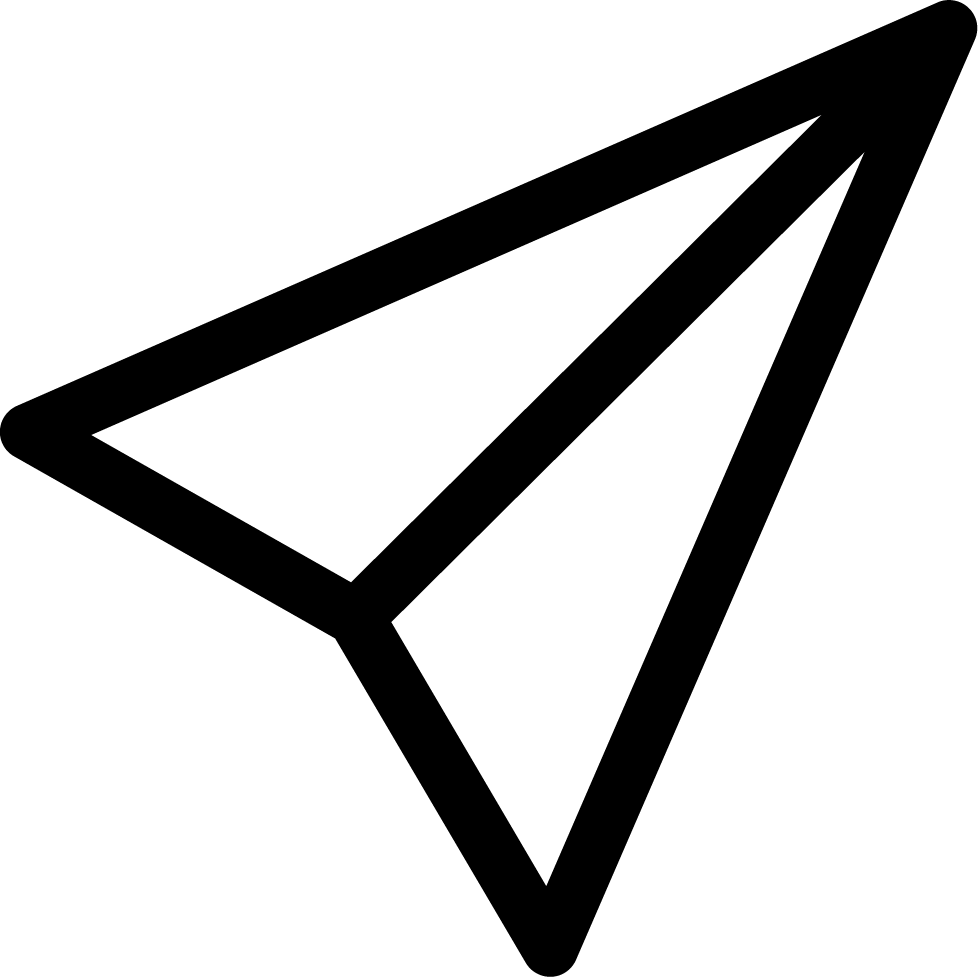

<!--
  Generated template for the CommentPage page.

  See http://ionicframework.com/docs/components/#navigation for more info on
  Ionic pages and navigation.
-->
<ion-header>
  <ion-navbar hideBackButton>
    <ion-buttons left>
      <button (click)="goBack()" ion-button icon-only>
        <ion-icon class="custom-icon" name="arrow-round-back"></ion-icon>
      </button>
    </ion-buttons>
    <ion-title>Komentar</ion-title>
    <!-- <ion-buttons right>
          <button (click)="goToNotification()" ion-button icon-only>
            <ion-icon class="custom-icon" name="notifications"></ion-icon>
          </button>
        </ion-buttons> -->
  </ion-navbar>
</ion-header>

<ion-content no-padding>
  <ion-row no-margin class="w100 campaign">
    <!-- This is campaign description -->
    <ion-col col-12 no-padding class="w100 campaign-comment dIF">
      <ion-col col-2 col-md-2 class="aiCenter" text-center>
        
        
      </ion-col>
      <ion-col col-10 col-md-10>
        <p no-padding no-margin>
          <b>{{namaPenggunaKampanye}}</b> {{deskripsiKampanye}}</p>
      </ion-col>
    </ion-col>

    <!-- This is campaign comment -->
    <ion-col *ngFor="let comment of comments; let i= index" col-12 no-padding class="w100 campaign-comment comment-list dIF">
      <ion-col col-2 col-md-2 class="aiCenter" text-center>
        
        
      </ion-col>
      <ion-col col-10 col-md-10>
        <ion-col no-padding col-12 class="comment">
          <p no-padding no-margin>
            <b>{{comment.nama_pengguna}}</b> {{comment.komentar}}</p>
        </ion-col>
        <ion-col no-padding col-12 class="comment-action dIF aiCenter">
          <ion-col no-padding col-4>
            {{comment.lama_posting}} Jam yang lalu
          </ion-col>
          <ion-col no-padding col-4 class="dIF aiCenter">
            <ion-col no-padding col-2>
              
            </ion-col>
            <ion-col no-padding col-10 class="count">
              {{comment.total_like}} Orang
            </ion-col>
          </ion-col>
          <ion-col no-padding col-4 class="dIF aiCenter">
            <ion-col no-padding col-2>
              
            </ion-col>
            <ion-col no-padding col-10 class="count">
                {{comment.total_dislike}} Orang
            </ion-col>
          </ion-col>
        </ion-col>
      </ion-col>
    </ion-col>
  </ion-row>
</ion-content>

<!-- This is comment field -->
<ion-col col-12 class="timeline-comment dIF aiCenter">
  <ion-col col-2 class="comment-child">
    
    
  </ion-col>
  <ion-col col-8 class="comment-child dIF aiCenter">
    <!-- <p no-margin>Berikan komentar anda...</p> -->
    <textarea placeholder="Berikan komentar anda..." #myInput id="myInput" rows="1" maxLength="500" [(ngModel)]="newComment"></textarea>
  </ion-col>
  <ion-col col-2 class="comment-child">
      <ion-icon (click)="sendComment(idKampanye, idPengguna, newComment, token)" ios="ios-send-outline" md="md-send" style="zoom: 2"></ion-icon>
    <!--  -->
  </ion-col>
</ion-col>